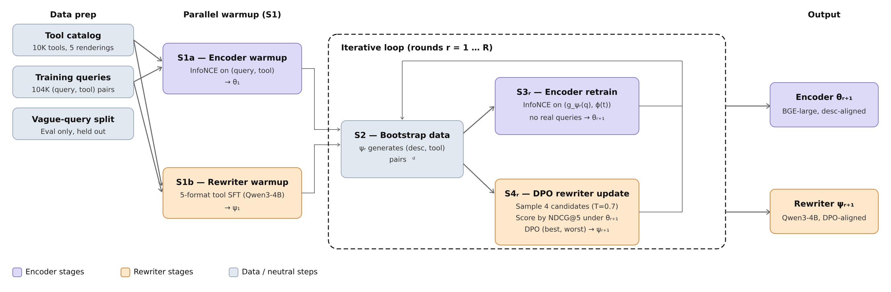
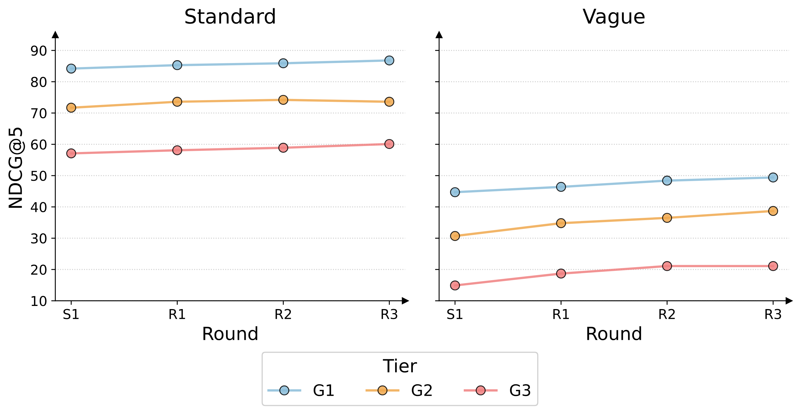
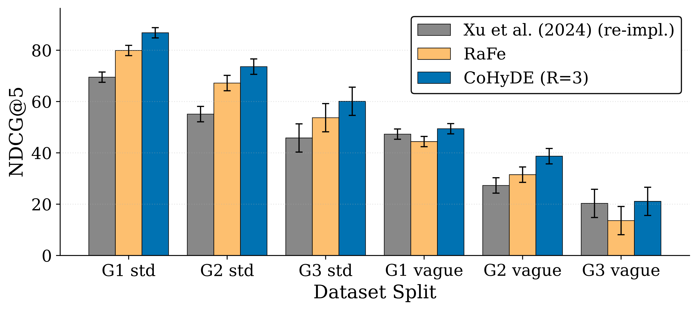

分享 SHARE
做工具检索、query 改写或者 dense retrieval 的团队值得读，因为它把一个常见现象讲透了：单独训好的改写器和单独训好的编码器，直接拼在一起反而更差。SAP（德国企业软件公司）的这篇论文让大模型改写器和检索编码器轮流以对方为目标训练，核心思想一句话：改写器把用户的话写成“工具说明书”风格的描述，编码器只用这些描述来训练，改写器再按编码器的检索得分做 DPO，循环三轮。在约 1 万个工具的 ToolBench 子集上，相比最强的单组件基线（只微调编码器），标准查询的 NDCG@5 平均提高 2.5 个百分点，口语化的模糊查询平均提高 6.3 个百分点，跨领域模糊查询提高 8.0 个百分点。代价是每次查询要多跑一次 4B 模型生成，单条延迟从约 12 毫秒变成约 546 毫秒。
它解决什么问题？
大模型 agent 调用工具前，要先从几万个 API 里挑出几个候选，这一步叫工具检索。通常做法是把查询和工具描述都编码成向量，取最相近的几个。难点在于，用户说的是口语，工具库写的是技术说明。
下面用一个示意例子说明这个差距。工具库里有一个工具的描述是“根据城市名返回未来 7 天的天气预报，包括降水概率”。标准查询可能是“用天气 API 查巴黎未来一周的预报”，和描述用词很接近；模糊查询则是“这周末去巴黎，要不要带伞？”，一个关键词都对不上。
现有两条路各有短板。第一条是用查询和工具配对数据微调编码器。它在用词接近时很准，用词一变就掉得厉害：论文里微调后的 BGE 在标准查询 G1 上 NDCG@5 是 84.2%，换成同一批查询的口语化改写后只剩 44.7%。第二条是 HyDE（先让大模型写一段假想的目标文档，再用这段文档的向量去检索）。大模型能读懂“带伞”背后是要查天气，但它写出来的描述不了解工具库的用词习惯，在标准查询上反而拖后腿。
这里的 G1、G2、G3 是 ToolBench 的三档难度：G1 只涉及单一领域的工具，G2 跨领域但同一大类，G3 跨领域且跨大类，越往后越难。
方法全景

| 步骤 | 训练谁 | 用什么数据 | 目的 |
|---|---|---|---|
| S1a 编码器预热 | BGE-large（约 3.35 亿参数） | 真实查询和工具描述配对，InfoNCE | 先得到最强的纯编码器基线 |
| S1b 改写器预热 | Qwen3.5-4B，LoRA | 工具库本身，每个工具 5 种写法 | 让改写器学会工具库的用词 |
| S2 生成描述 | 不训练 | 改写器为每条训练查询写一段工具描述 | 产出下一步的训练数据 |
| S3 重训编码器 | 编码器 | 只用“生成的描述和对应工具”配对，不用任何真实查询 | 让编码器适应改写器的输出 |
| S4 对齐改写器 | 改写器，DPO | 编码器打分选出的好坏描述对 | 让改写器写出编码器检索得准的描述 |
S2 到 S4 构成一轮，论文跑了三轮。推理时只用改写器生成的描述去检索，原始查询完全不参与编码。
为什么不能把两个训好的组件直接拼起来？
这是整篇论文的出发点。直觉上，一个训好的编码器加上 HyDE 改写，应该两头的好处都拿到。实际上，把原版 Qwen 改写器接到 S1a 训好的编码器上，标准 G1 的 NDCG@5 从 84.2% 掉到 73.4%，六个评测格子全部变差。
原因是编码器的相似度是按训练时见过的输入校准的。S1a 训练时，查询那一侧放的是用户原话；推理时却换成了一段几十个词的技术描述，它在向量空间里的分布已经偏离了训练时的位置，最近邻搜索就被带偏了。这说明改写器和编码器必须针对彼此的输出一起调，不能各训各的再组装。
论文还比较了两种改写方式。“改写查询”是让大模型把用户的话改得更具体，交给编码器的仍是一句用户口吻的话；HyDE 是直接写一段工具描述，交给编码器的文本本身就和工具库里的文档同一种写法。在跨大类的模糊查询 G3 上，前者 NDCG@5 只有 6.2%，比不改写的原版 BGE（8.3%）还低；HyDE 是 17.4%。这说明在工具检索里，写“像工具说明书的文字”比把用户的话说得更清楚有用得多，CoHyDE 因此选择了 HyDE 这条路。
机制拆解
第一步是 S1b 改写器预热，让改写器先背下工具库。为什么需要？原版大模型写的描述用词和工具库对不上。作者把每个工具按 5 种写法（只有标题、加 API 名、加工具说明、标题加 API 名加 API 说明、完整记录）拼成文本，让改写器做下一个 token 预测，约 5 万条样本训 8 个 epoch。去掉这一步，标准 G3 的 NDCG@5 从 60.1% 掉到 50.5%，而 G1 只掉 5.5 个百分点。跨大类的工具和用户原话的共同词最少，最依赖改写器先学会工具库的说法。
编码器重训时也用同样的 5 种写法：每对训练样本随机抽一种写法表示工具。这样编码器对同一工具的长短不同写法给出相近的向量，后面面对改写器输出长度不一时更稳。
每一轮的 S3 只用生成的描述重训编码器。为什么不混入真实查询？作者试过一半真实查询、一半生成描述，结果没有提升，模糊查询还略降。他们的解释是，混入真实查询会把编码器拉回 S1a 的状态，而 S1a 正是在模糊查询上失效的那个状态。所以这一步是有意让编码器的输入分布偏离原始查询。
每一轮的 S4 用检索得分对改写器做 DPO。为什么需要？S2 生成的描述只保证“像工具说明书”，不保证能检索到正确工具。作者对每条训练查询用温度 0.7 采样 4 个描述，用刚重训的编码器检索，按 NDCG@5 打分，得分最高的当作好样本、最低的当作差样本，做标准 DPO（β=0.1）。
NDCG@5 怎么算，可以手算一遍。示意：一条查询有 2 个正确工具，检索结果的第 1 名和第 3 名命中。实际得分是 1/log₂2 + 1/log₂4 = 1 + 0.5 = 1.5；理想情况是两个正确工具排在第 1、2 名，得分 1 + 1/log₂3 ≈ 1.63；NDCG@5 ≈ 1.5 / 1.63 ≈ 0.92。如果 4 个描述的得分是 0.92、0.39、0.39、0，就取 0.92 那条为好样本、0 那条为差样本；4 个得分完全一样的查询直接丢掉，因为分不出好坏。
S4 依赖采样出来的描述之间有差异。作者早期还试过一个可选步骤：在进入循环前，用原版改写器自己生成并清洗过的约 2,754 条“查询对应描述”样本，对改写器再做一次短 SFT，让输出风格更像工具库。最终方案没有用这一步，但它暴露了一个规律：这次 SFT 从 100 步加到 1000 或 5000 步后，S4 采样的 4 个描述变得很像，好坏差距变小，闭环收益反而下降。
结果
主结果（NDCG@5，%，论文表 1 节选）：
| 方法 | 标准 G1 | 标准 G2 | 标准 G3 | 模糊 G1 | 模糊 G2 | 模糊 G3 |
|---|---|---|---|---|---|---|
| BM25 | 49.0 | 31.0 | 17.3 | 17.8 | 10.3 | 3.4 |
| text-embedding-3-large | 61.6 | 36.3 | 26.7 | 34.8 | 18.1 | 19.8 |
| HyDE（原版 Qwen 加原版 BGE） | 58.2 | 34.9 | 35.1 | 37.4 | 17.7 | 17.4 |
| 只微调编码器（S1a） | 84.2 | 71.7 | 57.1 | 44.7 | 30.7 | 14.9 |
| 原版 Qwen 加 S1a 编码器 | 73.4 | 59.5 | 46.2 | 41.2 | 29.3 | 17.6 |
| CoHyDE 第 3 轮 | 86.8 | 73.6 | 60.1 | 49.4 | 38.7 | 21.1 |
相对 S1a，CoHyDE 在标准查询上提高 2.6、1.9、3.0 个百分点，在模糊查询上提高 4.7、8.0、6.2 个百分点。这说明联合训练基本没牺牲标准查询的精度，主要收益在模糊查询上。另外，三轮重训编码器时都没有用真实查询，只是从 S1a 的编码器接着训，只用生成的描述训练，标准查询的精度也没有因此下降。
消融也支持这个分工。把训好的改写器接到原版 BGE 上，标准查询掉 23.6 到 35.5 个百分点，跌得最惨。反过来，把联合训练后的编码器配上原版改写器，标准 G1 只差 0.5 个百分点，标准 G2 还高 2.0 个百分点；但标准 G3 掉 6.4 个百分点，三档模糊查询各掉 5.3 到 5.9 个百分点。这说明编码器负责简单查询的精度，改写器的价值集中在难查询和模糊查询上。

轮数怎么定？第 1 到第 2 轮的提升普遍大于第 2 到第 3 轮。作者换了一个随机种子加跑第 4 轮：标准 G3 从 57.5% 升到 62.5%，但三档模糊查询都下降了 0.9 到 1.8 个百分点。也就是说，继续训会让系统更偏向标准查询，第 3 轮是模糊查询表现最好的点。

和已有方法比：Shao 等人的方法只迭代训练编码器、推理时仍用原始查询，CoHyDE 在标准查询三档上领先 14.3 到 18.5 个百分点。RaFe 用外部重排模型的反馈训练查询改写器，编码器保持冻结，标准查询上落后 CoHyDE 6.4 到 6.9 个百分点，模糊 G3 上是 13.6% 对 21.1%。这说明两边都训、并且直接用编码器的检索得分做反馈，比只训一边更有效。
局限
第一，提升的幅度和评测集的统计误差相当。按论文附录，NDCG@5 的 95% 置信区间半宽在 G1 约 ±2 个百分点、G2 约 ±3、G3 约 ±5 到 6，因为 G3 只有 100 条评测查询。作者自己的结论是：第 3 轮相对 S1 的提升，模糊查询只在 G2 上明显超出这个区间，G1 和 G3 都在区间内。换一个种子重跑，标准 G3 的第 3 轮是 57.5%，只比 S1a 的 57.1% 高 0.4 个百分点。
第二，线上成本。因为每条查询都要让 4B 模型先生成一段描述，在一张 H200 上平均要 546 毫秒，而只用编码器约 12 毫秒，所以延迟高出约 45 倍。训练也不便宜，复现主结果约需 50 个 GPU 小时。论文也没有和 cross-encoder 重排或稀疏加稠密的混合检索比较，而这两种是在线系统里常见的、延迟远低于 500 毫秒的替代方案。
第三，评测条件偏宽松。1 万个工具的子集保留了所有评测查询的正确工具，其余从 46,980 个工具里按比例抽样，干扰项比全量少得多。模糊查询由 Claude 改写、再由 Claude 自检，人工只抽查了 50 条。另外，表 2 里“原版改写器加联合训练编码器”那一行的六个 Recall@5，和表 1 里“原版 Qwen 加 S1a 编码器”那一行完全相同，而两行的 NDCG@5 并不相同，引用这几个数时要小心。
一个检索团队可以怎么试
- 先确认问题存在：从线上日志或人工改写里准备一批口语化查询，和规范查询对比，看现有编码器的 NDCG@5 或 Recall@5 掉多少。如果只掉几个百分点，这套方法不划算。
- 做最便宜的两个预热：编码器用多种写法表示同一文档来训练；改写器用文档库本身做下一个 token 预测，再试一次 HyDE 检索。这一步就能看出改写器写的描述是否贴近文档库的用词。
- 再跑一轮闭环：用改写器生成描述、只用描述重训编码器，然后每条查询采样 4 个描述，按新编码器的检索得分做 DPO。主要看模糊查询，标准查询不下降就算过关。
- 上线前处理延迟：可以只在编码器置信度低的查询上调用改写器，或者离线为高频查询缓存描述。判断标准是 P90 延迟在预算内，同时模糊查询的召回提升仍然保留。
结论与评价
这篇论文最有用的结论是：HyDE 式改写器和编码器的输入分布必须一起调，单独训好再拼装会更差；联合训练后，收益集中在用户用词和文档用词差得远的查询上。
| 维度 | 评价 |
|---|---|
| 问题重要性 | 中高。工具检索和口语化查询是 agent 落地的常见瓶颈 |
| 方法创新性 | 中。HyDE、InfoNCE、DPO 都是现成的，新意在让两边都训练、并用编码器得分闭环 |
| 实验证据 | 中。消融完整，有两个种子和置信区间；但只在 1 万工具的子集上，模糊查询的部分提升落在误差范围内 |
| 工程成本 | 中高。每次查询多一次 4B 模型生成，延迟约 546 毫秒；复现约 50 个 GPU 小时 |
| 是否值得尝试 | 口语化查询比例高、能接受几百毫秒延迟的场景值得试；延迟敏感的在线检索要先解决生成成本 |
| 适用场景 | agent 工具检索、企业 API 目录检索，以及用户用词和文档用词差异大的搜索 |
读完这篇，你觉得
夜读鸮记下了，谢谢你的反馈。
点一下即可，无需登录；再点一次撤回。只统计匿名次数，不记录你是谁。
讨论
欢迎补充实验细节、复现经验或不同看法。需 GitHub 登录。
正在加载讨论…